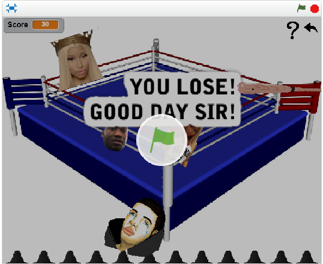
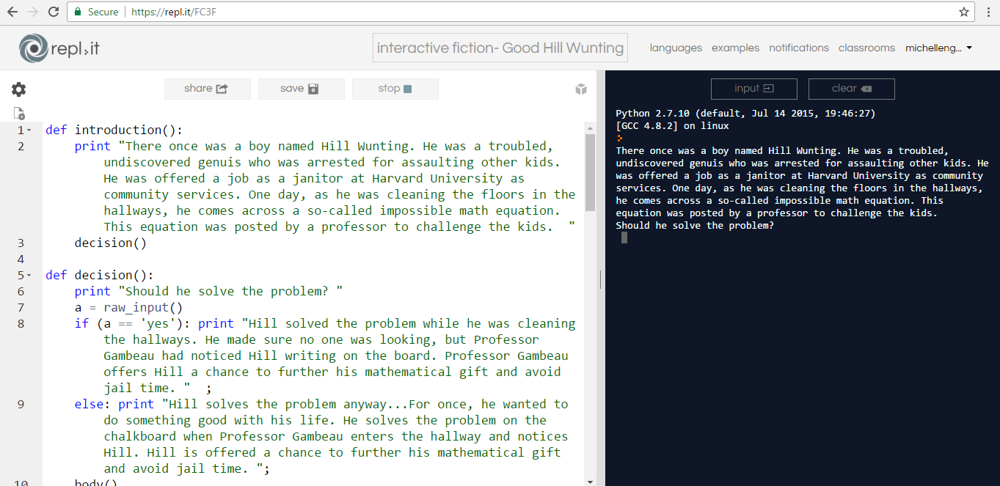

Home
About Me
Portfolio
This is my Portfolio Page!



My First Scratch Game: Drake vs Meek Mill
The purpose of this game is to use drake and his bat to touch the Nicki Minaj faces, as well as Meek's. Some specific scratch codes
that I used were forever loops and motion codes (i.e. move a certain number of steps,rotation etc). I used several
forever loops in order to enable the sprites to continously moving throughout the game. Some difficulties that were
faced during the devlopment of this game were figuring out the right codes in order to make your game work the way you
want it to. I had to use trial and error in order to perfect the scripts for this game, which got frustrating at times.
But, patience is key with developing anything in computer science.

Interactive Fiction Reflection: Good Hill Wunting
To produce this interactive fiction story, I first had to figure out what I wanted my story to be about. After I decided the plot
line of my story, I outlined everything with a story map. Planning was only the first step. Then came the actual coding, wich required
several basic python codes. This included knowing how to define a function and create if/else statements that would offer differing
results. During the process of developing this story I did not face any problems, fortunately. Overall, I am semi-proud about this work.
I'm happy that it functions properly and offers a cool story. But, I do think that if I work on it a little more, I'll be able to included
more complicated codes to produce a more advanced project. If I had the chance to do this project again I would add more decision points.